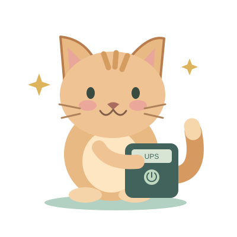

IT Admin schedules reminders from the UPS Reminders page. They run in the Windows helpdesk app, separately from ticket notifications and device monitoring. No reminder emails are sent. This feature never switches off equipment automatically.
A centred window with an animated cat and your message, approximately 60% of the active screen's work-area width and height. Acknowledged dismisses it for that date. Remind me in 10 minutes, Escape or closing the popup snoozes it. No screen capture, remote control or equipment shutdown is performed.
The reminder follows the signed-in helpdesk user, not a monitored-device enrollment. Every PC signed in as that user receives the schedule and reports its own acknowledgment. The app must have downloaded the schedule at least once. Cached schedules run without internet, including after an offline restart. Updates and disabling take effect once that PC reconnects. Signing out clears the active schedule. Quit stops all reminders.
Times are fixed to Malaysia (UTC+8). The PC must be awake and a Windows user signed in. Screen lock postpones the popup until unlock. Missed reminders appear only within one hour of their scheduled time; older ones are skipped. One acknowledgment per user, app installation and Malaysia date is recorded. Changing a time does not show another reminder after acknowledgment that day.
Acknowledgments are stored locally while offline and retried when the same account reconnects. Unsynced clicks expire after 89 days. The admin page shows the latest 100 received clicks. Missing entries mean no click was received, not proof that the user ignored a popup. Computer names and click times are self-reported; they do not prove the UPS was switched off. No acknowledgment is emailed.
Schedules and queued acknowledgment metadata are stored in the app's Windows user-data folder; no extra Firebase credentials are saved there. The animated cat is bundled with the app, so it works offline without downloading a GIF.